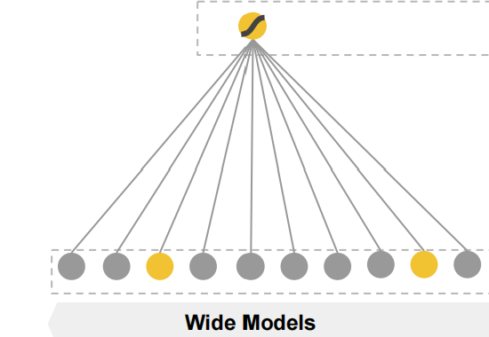
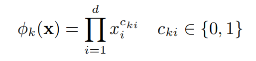
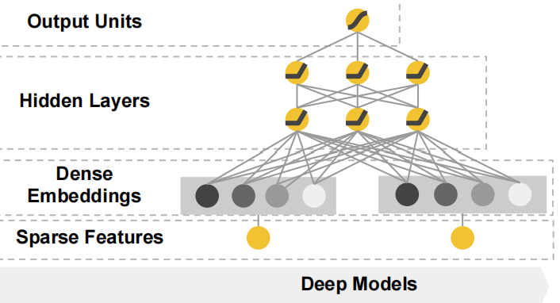
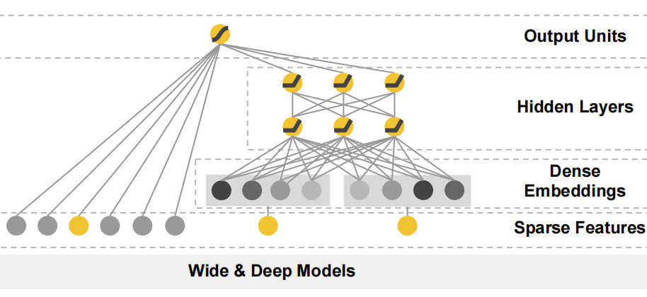
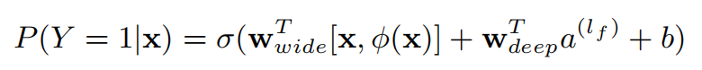
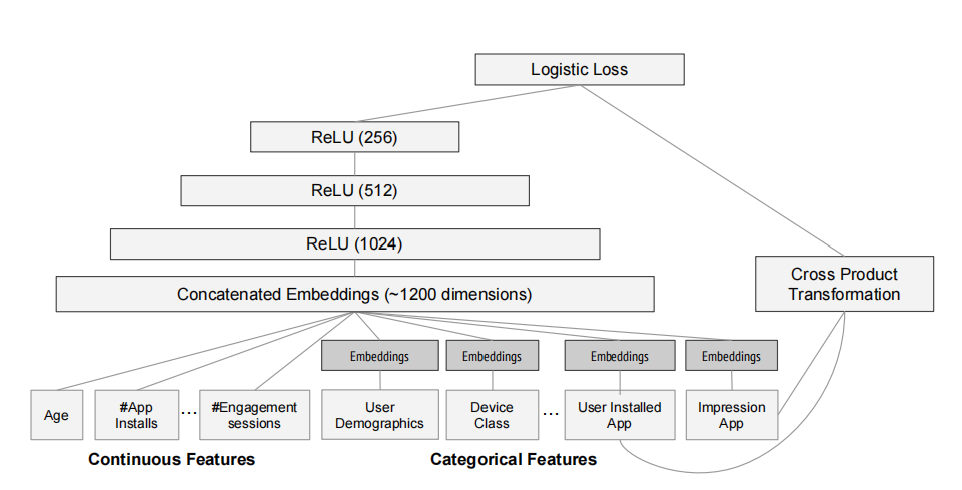

经典推荐模型:Wide&Deep
本文介绍谷歌于2016年提出的Wide&Deep模型，它兼具记忆能力与泛化能力，在谷歌商店的app推荐中效果显著。
Wide&Deep由记忆能力较强的Wide部分和泛化能力较强的Deep部分组成，接下来我们分别介绍这两部分，然后将它们组合起来，得到Wide&Deep.
Wide
Wide部分是一个(广义)线性模型，比如逻辑回归，具有较强的记忆能力。

输入这种模型的特征可以通过交互产生新的有用特征，然后将这些新的特征与原始特征共同输入模型进行预测。
举个栗子，假设输入逻辑回归模型的特征中含有”已安装应用，在应用商店看到的应用”这俩特征，那么我们可以根据这俩特征得到一个新的交互特征：”已安装应用=xxx 并且 在应用商店看到的应用=yyy”.
使用上述方法构造特征，训练模型。当待预测的样本特征中也含有类似上述交互特征时，由于在训练集中存在相同特征，那么模型就能很快定位到训练集中出现相同模式时的标签。
假设训练集中出现”已安装应用=Youtube 并且 在应用商店看到的应用=facebook”这一交互特征，也就是说，用户安装了Youtube，并且在应用商店中看到了Facebook，那么我们可以统计该样本对应的标签(是否安装看到的Facebook)，得到两者的共现频率，若共现频率达到某一设定阈值，那么在预测时，如果待预测的样本中出现了”已安装应用=Youtube 并且 在应用商店看到的应用=facebook”，那么就可以认为该用户会安装看到的Facebook，这就是所谓的记忆能力。
Wide部分使用如下公式构造交互特征，这被称为cross-product transformation：

$d$是输入Wide部分的总特征数。
当第i个特征不构成第k个交互特征时，$c_{ki}=0$，反之为1。
线性模型通常输入one-hot形式的类别特征，比如对于如下的交互特征：AND(gender=female, language=en)
只有当gender=female 且 language=en时，AND(gender=female, language=en) 的值才是1，其余情况都是0.
尽管线性模型具有较强的记忆能力，但是，如果测试样本中出现模型从而见过的某种模式(训练集中不曾有)，那么就可能束手无策了。
面对新事物时无法正确做出决策，这意味着线性模型的泛化能力不足。
Deep
Deep部分就是深层神经网络，它由多个全连接层+激活函数堆叠而成。

它可以将稀疏的类别变量的One-Hot形式使用Embedding编码，从而使得稀疏向量稠密化。因此，Deep部分拥有较强的泛化能力。
尽管如此，当一些待推荐的物品比较小众，或者用户的品味十分独特时，对应的共现矩阵相应位置是非常稀疏的，但由于有Embedding的存在，导致Embedding后的向量中多数位置非零，于是会推荐一些不相关的物品，模型出现了过度泛化。此时，还不如直接根据线性模型的记忆能力进行推荐。
Wide&Deep
既然(广义)线性模型具有较强的记忆能力，而深层的神经网络具有较强的泛化能力，那不如将两者结合起来，以获得更好的推荐效果，于是，Wide&Deep诞生了。

Wide&Deep的前向传播过程如下：

可以看到，在Wide部分，将原始特征$x$和交互特征$\phi(x)$拼接在一起，输入到Wide，$W_{wide}$是Wide部分对应的模型权重；在Deep部分，直接将特征做Embedding，然后经过堆叠的全连接层+激活函数，$W_{deep}$是Deep部分对应的模型权重
最终，将两部分的输出一起输入最后的输出层，对于CTR预估问题，输出层一般是$Sigmoid$.
作者在论文中也给出了一个具体应用Wide&Deep的例子，此时的网络结构如下：

它被用于谷歌商店为用户推荐app的环节。
在Deep部分，其中的数值型特征无需编码，类别特征经过Embedding，两者拼接起来，得到的向量大概是1200维，将其输入到后续全连接层+激活函数；在Wide部分，只使用了User Installed App 和Impression App，即用户已安装应用和被曝光的应用。
以上便是Wide&Deep的介绍。在具体使用时，还需要根据具体的应用场景，灵活选取输入Wide和Deep部分的特征。网上有贝壳找房在2019年末发布的Wide&Deep在他们业务中的应用，想了解的小伙伴可以看参考资料[3].
参考资料：
- [1]https://arxiv.org/pdf/1606.07792.pdf
- [2]https://blog.csdn.net/wuzhongqiang/article/details/109254498
- [3]https://mp.weixin.qq.com/s?__biz=MzI2ODA3NjcwMw==&mid=2247483659&idx=1&sn=deb9c5e22eabd3c52d2418150a40c68a&chksm=eaf452fbdd83dbed0d6de5e847e8569bdc0a75ef6aa23fcaa9c5586a2572cd0e216f499a529b&scene=21#wechat_redirect
- [4] https://blog.csdn.net/duyibo123/article/details/113418872
- [5] https://www.jianshu.com/p/eb0cd2cfe75c